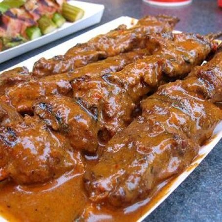

Banyan Beef

Description
If you've ever been to Disney Land, odds are you've at least seen the Bengal Barbecue stand sitting right next to the famous Indiana Jones ride. If
you have been fortunate enough to order the Banyan Beef Skewers, you know just how special they are.
It's a match made in heaven between the perfectly grilled sirloin and the spicy, yet tangy, sauce. This recipe will take you right back to
Disney Land!
Ingredients
Sauce
- 1 Teaspoon vegetable oil
- 1 Tablespoon fresh crushed garlic
- 1 Tablespoon fresh lemon juice
- 2 Tablespoons brown sugar
- 3 Tablespoons sesame oil
- 1 Tablespoon ground black pepper
- 2/3 Cup soy sauce
- 1 Cup water
- 1 Tablespoon corn starch
Beef
- 18 One-ounce pieces sirloin beef chunks
- 6 Bamboo skewers
- 1 Part soy sauce
- 2 Parts lemon juice
- 1 Part water and pepper
Method
Directions - Korean Sauce
- Heat a teaspoon of vegtable oil gently in a saucepan.
- Add one tablespoon (Or more to taste) of crushed fresh garlic. Saute lightly, do not burn.
- Add soy sauce, water, lemon juice, brown sugar, Sesame Oil, Black Pepper, Red Pepper flakes, Cayenne. Bring to a slow boil over medium to low heat.
- Reduce heat and simmer to reduce slightly.
- Mix 1 Tablespoon of Cornstarch with 1/4 cup of water. Mix well. Add to simmering sauce.
- Allow mixture to simmer slowly until the sauce thickens to a shiny, but thick sauce.
- Taste it. Adjust mixture according to taste. Let this sit while you prepare the rest of the recipe.
Directions - Beef
- Cube Sirloin into one-inch cubes.
- Put into a Ziplock bag with a marinade of 1 part Soy Sauce, 2 parts Lemon Juice, 1 part water and several grinds of pepper. Let this marinate in the
refrigerator at least 3 hours.
Directions - Assembly
- Gently warm the Korean Sauce. If it's too thick add a little water, lemon or Soy Sauce.
- Put the meat on skewers and grill over medium heat until they are medium rare to medium.
- Once you put the skewers on a plate baste generously with the Korean Sauce.